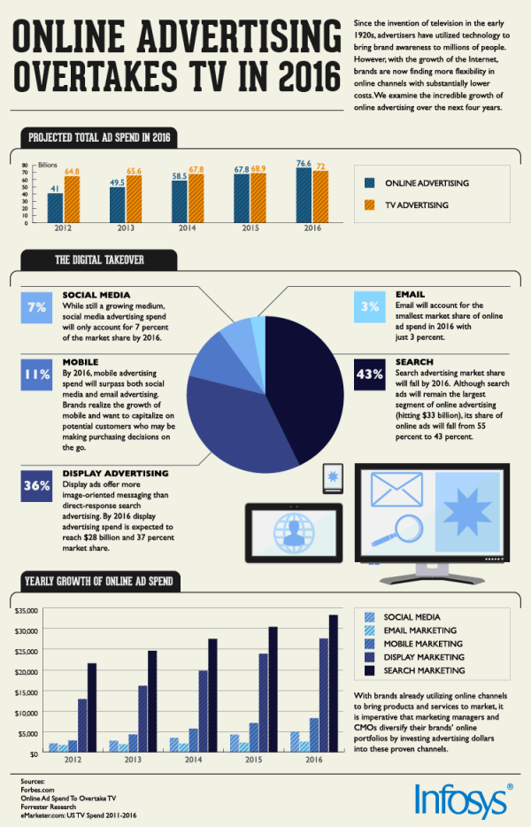

We asked Mack Roskoski, a DJ at Lambda Chi Aplha here at IU, how many parties he DJed recently and how many of those were arranged via social media. Here are his responses.
This is an infographic we found during our research. It shows how viable our application is as a profitable business venture, since online advertising has officially overtaken televised advertising as of 2016. We can make a profit using in-app advertisements.
 Source